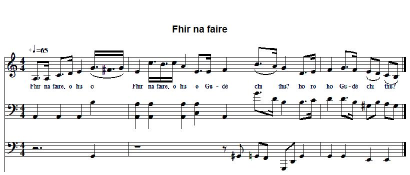

Fhir na faire, gudé chi thu?
Outlook, what do you see? - Veilleur, que vois-tu?
Author unknown

Tune- Mélodie
Waulking song "Gu dé ni mi noch ri m' naire?"Sequenced by Christian Souchon
|
To the tune:
(Very roughly) as sung on the CD "Gaelic Songs of Scotland - Women at work in the Western Isles" from the Alan Lomax Collection To the lyrics: From "Orain Ghàidhealach mu Bhliadhna Teàrlaich" (Highland songs of the forty-five), p. 336, by John Lorne Campbell who writes: I add here the words of an interesting traditional Jacobite waulking song from the Isle of Skye, found in the papers of the late Alexander Nicolson, for many years secretary of the Gaelic Society of Inverness... This song may have been communicated by Hugh Barron. The air of N° LXXVIII of 'Hebridean Folksongs' would suit; presumably at a waulking each half line except the first would be sung twice with the alternating refrain." (We also may assume, as I did, that the first line was repeated). "Hebridean Folksongs" was edited in three volumes by John Lorne Campbell and Francis Collinson (Oxford: Oxford University Press, 1969–81). The air referred to is the waulking song "Gu dé ni mi noch ri m' naire?" |
A propos de la mélodie:
C'est (approximativement) celle qu'on trouve sur le CD de la collection d'Alan Lomax, intitulé "Gaelic Songs of Scotland - Women at work in the Western Isles". A propos des paroles: Le texte est tiré de "Orain Ghàidhealach mu Bhliadhna Teàrlaich" (Highland songs of the forty-five), p. 336, de John Lorne Campbell qui indique: J'ajoute ici les paroles d'un chant de foulage traditionnel jacobite de l'Île de Skye, que j'ai trouvé dans les papiers du regretté Alexander Nicolson, qui fut longtemps secrétaire de la Société gaélique d'Inverness... Il se peut qu'on en doive la communication à Hugh Barron. L'air du n° LXXVIII des "Chants populaires des Hébrides" devrait convenir; on peut supposer que lors du foulage, on chantait chaque deuxième ligne deux fois et qu'on alternait strophe et refrain." (On peut aussi supposer, comme je l'ai fait, que c'est la première ligne qui est répétée). "Hebridean Folksongs" fut publié en trois volumes par John Lorne Campbell et Francis Collinson (Oxford: Oxford University Press, 1969–81). L'air auquel on se réfère est le chant de foulage "Gu dé ni mi noch ri m' naire?" |

|
Chorus Look-out! o hu o What do you see? ho ro ho 1. I see Udairn, [*] And the Point of Hunish, And the Sound of Rona Covered with mist. 2. Do you see the galley Beside the Dùn (Duntulm), Flying the white banner Of Charles Stuart? 3. Mary Mother! May he have double divine favour: There is a price on his head And the strangers are pursuing him. 4. May the French come over And help him! [*] Udairn (Skye) is a placename opposite Portree; Rubha Hunish with Duntulm Castle is the northernmost point of the Isle of Skye. "Sound of Rona" is for "Sound of Raasay". The watch is on board a ship leaving from Portree and sailing north up the east coast of Skye . |
Seist Fhir na faire, o hu o , Gudé chi thu? ho ro ho 1. Chi mi 'n Udairn, [*] o hu o , 'S Rubha Hùinis, ho ro ho Caolas Ronaidh, o hu o , Ceo 'ga mhùchadh, ho ro ho 2. Am faic thu bhiaoirlinn o hu o , Taobh an Dùine, ho ro ho Bratach bhàn rith' o hu o , Theàrlaich Stiùbairt? ho ro ho 3. Mhuire Mhàtair! o hu o , Gràs Dha dùbailt ho ro ho Airgead-ceann air o hu o , 'S Goill 'ga sgiùrsadh; ho ro ho 4. Feachd na Frainge o hu o , Nall 'ga chùmhnadh! ho ro ho |
Refrain O veilleur! o hu o Dis, que vois-tu? ho ro ho 1. Je vois Udairn, [*] Et la Pointe d'Hunish, Et le bras de Rona Couverts de brume. 2. Dis, vois-tu le vaisseau Près de Duntulm, Avec le drapeau blanc De Charles Stuart? 3. Mère de Dieu! Redoublez de bienveillance: Sa tête est mise à prix Les "Galls" sont à ses trousses. 4. Faites que les Français Viennent à son aide! [*] Udairn (Skye) est un lieu-dit, en face de Portree; la Pointe de Hunish avec Duntulm Castle est le point le plus au nord de l'île de Skye. Le "Sound de Rona" est le "Sound de Raasay". Le bateau où se trouve la vigie a quitté Portree et se dirige vers le nord de l'île en longeant sa côte est. |